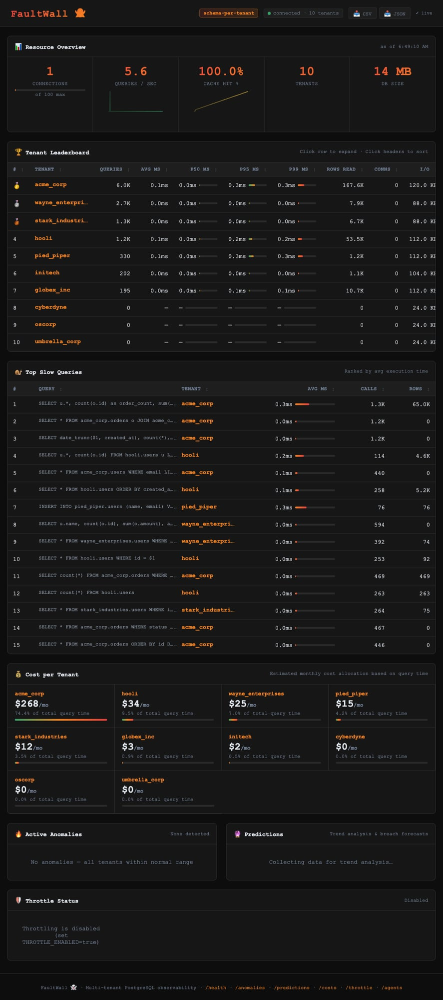

Your AI agent has database credentials. FaultWall enforces what it's allowed to do. An inline L7 proxy that parses every SQL query and blocks violations before they reach PostgreSQL. One Go binary.

./faultwall --proxy --listen :5433 --upstream localhost:5432 --policies ./policies.yamlInline proxy that blocks rogue queries before they execute. No instrumentation required.
An inline L7 proxy that sits between your agents and PostgreSQL. Mission-scoped policies define what each agent can do in YAML — tables, operations, row limits. Everything else is blocked before it reaches the database.
Agents identify via PostgreSQL's application_name: agent:cursor-ai:mission:summarize. FaultWall knows WHO is running WHAT.
Queries are parsed and blocked BEFORE reaching PostgreSQL. DROP TABLE? Never executes. SELECT on a table outside scope? Rejected at the proxy. The database only sees allowed queries.
Intercepts Simple Query and Extended Query Protocol (Parse/Bind/Execute). Works with psql, psycopg2, pgx, SQLAlchemy, JDBC — every PostgreSQL client.
Statistical learning builds per-agent baselines. Z-score analysis flags deviations. No LLM, no API keys — runs locally.
10-tool MCP server lets agents check their own policies, view violations, and manage themselves autonomously.
Define what each agent can do in policies.yaml — allowed tables, blocked operations, row limits, query timeouts. Per agent, per mission.
./faultwall --proxy --listen :5433 --upstream localhost:5432 --policies ./policies.yaml
Set application_name in the connection string: postgres://...?application_name=agent:cursor-ai:mission:summarize. FaultWall parses the identity automatically.
Every query is parsed and checked against the agent's policy. Allowed queries pass through to PostgreSQL. Violations are blocked at the proxy — the database never sees them.
FaultWall sits between your agents and PostgreSQL, parsing every query in real-time.
Connects to :5433
Parses SQL · Checks Policy
Port 5433
Only allowed queries
Port 5432
Your AI agent has valid credentials. A prompt injection tells it to DROP TABLE. FaultWall is the only thing standing between intent and disaster.
SELECT * FROM feedback LIMIT 100;DROP TABLE users;Inline L7 proxy between agents and PostgreSQL. Every query is parsed and checked against the agent's policy. Violations are blocked before they reach the database. DROP TABLE? Never executes.
For visibility without being in the data path. Polls pg_stat_activity to log agent queries and detect violations. Start here to learn your traffic patterns, then switch to proxy mode for enforcement.
A genetic algorithm continuously evolves detection parameters — sensitivity thresholds, window sizes, baseline intervals — against your real workload. The longer FaultWall runs, the better it understands your database.
Need deeper visibility? Our eBPF engine hooks into the Linux kernel's scheduler and block I/O subsystem. Every CPU nanosecond and disk byte attributed to the exact PostgreSQL PID — mapped back to the agent in real-time.
Available for teams running self-hosted PostgreSQL on Linux 5.8+ with PostgreSQL 14–16.
Contact Us →shreyas@faultwall.com
Open source. MIT licensed. One binary. Blocked queries never reach your database.
Get Started — it's free →